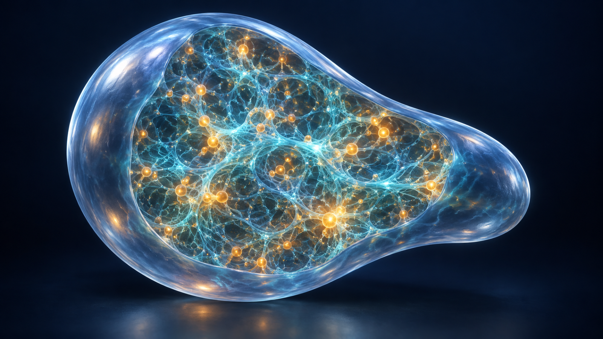
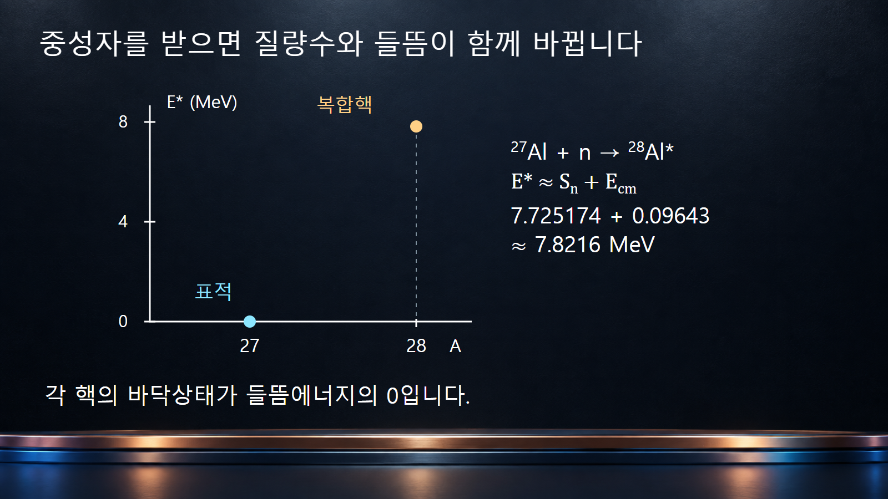
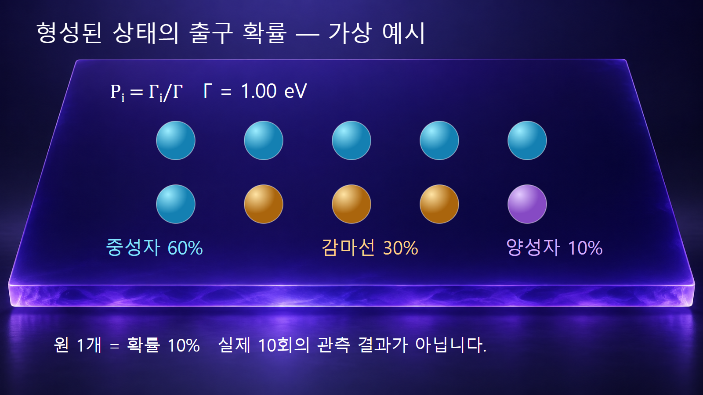

질량·에너지와 핵반응 · 029
복합핵 모형
입사입자를 흡수한 뒤 에너지가 핵자 사이에 섞인 들뜬 중간핵

복합핵은 입사입자와 표적핵이 결합하여 만드는 들뜬 중간 핵상태입니다. 입사 에너지가 여러 핵자의 자유도로 퍼진 뒤 입자나 감마선을 내보내는 과정을 설명할 때 유용합니다. 어떤 복합핵이 얼마나 잘 만들어지는가와, 만들어진 상태가 어느 출구로 붕괴하는가는 서로 구분하여 계산합니다.
1. 반응을 형성과 붕괴의 두 단계로 읽습니다
반응을 a + A → C* → b + B로 쓰면 C*가 복합핵이며 별표는 들뜬상태를 나타냅니다. 단순히 입사입자가 표면에서 방향만 바꾸는 장면과 달리, 복합핵 모형에서는 입사 에너지가 핵 내부의 여러 자유도로 분배됩니다. 출구 b + B가 처음 입구와 같을 수도 있으므로 복합핵 형성이 반드시 최종 핵종의 변화를 뜻하지는 않습니다.
중성자가 표적에 들어가면 복합핵의 양성자 수는 그대로이고 질량수는 1 증가합니다. 이후 중성자를 다시 내보내거나 감마선을 방출할 수 있으며, 충분한 에너지와 허용 조건이 있으면 다른 입자 방출이나 핵분열도 경쟁합니다. 하나의 중간 핵종에서 여러 최종 채널이 가능한 이유가 여기에 있습니다.
2. 느린 중성자도 높은 들뜸에너지를 만들 수 있습니다
바닥상태 표적이 중성자를 받아 복합핵을 만들 때, 복합핵의 들뜸에너지는 E* ≈ Sn(C) + Ecm입니다. Sn(C)는 만들어진 복합핵에서 중성자 하나를 떼어 내는 데 필요한 에너지이며, Ecm은 입구 채널의 질량중심계 운동에너지입니다. 중성자가 결합하면서 생기는 에너지 때문에 입사 운동에너지가 작아도 E*가 수 MeV에 이를 수 있습니다.
정지 표적의 질량을 M, 중성자 질량을 mn이라고 하면 저속 근사에서 Ecm = M/(M + mn)·Elab입니다. 실험실 입사에너지 Elab를 그대로 넣으면 전체 질량중심 운동에 들어가는 몫까지 내부 들뜸에 포함합니다. 무거운 표적에서는 차이가 작지만, 근사의 의미를 밝혀야 합니다.
3. 예시 1: 알루미늄-28 복합핵의 들뜸에너지
27Al + n → 28Al*에서는 질량수가 27 + 1 = 28, 양성자 수가 13으로 보존됩니다. 평가된 반응에너지 표에서 28Al의 중성자 분리에너지는 7725.1740 keV, 즉 7.7251740 MeV입니다. [2] 여기에는 표적 27Al의 분리에너지가 아니라 생성된 28Al의 값을 사용합니다.
입사 중성자가 0.100 MeV이고 질량비를 27:1로 근사하면 Ecm ≈ (27/28) × 0.100 = 0.09643 MeV입니다. 따라서 E* ≈ 7.725174 + 0.09643 ≈ 7.8216 MeV가 됩니다. 이 계산은 복합핵이 형성될 경우의 총 들뜸에너지를 구하며, 그 에너지에 맞는 모든 상태가 같은 확률로 만들어진다고 가정하지는 않습니다.
감마선 방출로 에너지를 낮추면 방사포획 27Al(n,γ)28Al로 이어질 수 있습니다. 중성자를 다시 방출하고 27Al이 바닥상태로 돌아오면 복합핵을 거친 탄성산란 경로입니다. 각 경로가 실제로 차지하는 비율은 입사에너지별 반응 자료로 확인해야 합니다.

4. ‘입구를 잊는다’에도 보존 조건이 있습니다
보어의 독립성 가정은 충분히 평형화된 복합핵의 붕괴를 형성 과정과 분리하여 다루는 생각입니다. 그러나 같은 핵종을 만들었다는 사실만으로 모든 출구 비율이 같아지는 것은 아닙니다. 비교하는 상태의 들뜸에너지, 전체 각운동량 J, 패리티 π가 같아야 하며, 붕괴 과정도 이 보존 조건의 제약을 받습니다.
서로 다른 입사입자는 동일한 복합핵이라도 서로 다른 J와 π의 상태들을 다른 비율로 채울 수 있습니다. 따라서 두 실험의 생성핵 A와 Z가 같다는 이유만으로 반응 수율을 직접 바꾸어 적용하지 않습니다. ‘기억을 잃는다’는 비유는 에너지·각운동량·패리티까지 사라진다는 의미가 아닙니다.
5. 예시 2: 부분폭에서 출구 확률을 계산합니다
한 복합핵 상태의 출구별 붕괴 세기는 부분폭 Γi로 나타낼 수 있습니다. 열린 채널의 부분폭을 더한 전체폭은 Γ = ΣΓi이고, 단순한 상태별 분기 확률은 Pi = Γi/Γ입니다. 폭의 단위는 에너지이며, 반응에너지 Q와는 역할이 다릅니다.
계산 연습을 위해 세 출구의 부분폭을 중성자 0.60 eV, 감마선 0.30 eV, 양성자 0.10 eV로 가정합니다. 모두 열려 있고 다른 채널은 없다고 놓으면 전체폭은 1.00 eV이며, 세 확률은 각각 60%, 30%, 10%입니다. 이 수치는 특정 알루미늄 상태나 실제 핵종의 평가값이 아닌 가상 예시입니다.
같은 예시에서 해당 상태를 만드는 형성단면적을 2.0 b로 가정하면 감마선 출구의 단면적은 단순한 분리 근사에서 2.0 × 0.30 = 0.60 b입니다. 30%는 입사 중성자 전체가 포획될 확률이 아니라, 지정한 복합핵 상태가 이미 만들어졌을 때의 출구 확률입니다. 실제 계산은 여러 J·π 상태와 채널 간 상관, 폭 요동 보정 등을 함께 다룹니다.

6. 공명의 폭은 상태의 수명과 연결됩니다
고립된 공명 상태의 평균수명 τ와 전체 에너지폭 Γ는 τ = ℏ/Γ로 연결됩니다. ℏ ≈ 6.58212 × 10−16 eV·s를 쓰면, 위 가상 예시의 Γ = 1.00 eV에 대응하는 평균수명은 약 6.58 × 10−16 s입니다. 전체폭이 100배라면 이 관계에서 평균수명은 100분의 1이 됩니다.
이는 평균수명이며 반감기와 같은 양은 아닙니다. 또한 모든 복합핵에 하나의 고정된 수명을 부여하지 않습니다. 실제 공명폭은 상태와 채널에 따라 달라지며, 측정된 피크의 폭에는 실험 분해능이나 도플러 확장도 영향을 줄 수 있으므로 관측 폭을 바로 Γ로 대입하기 전에 구분합니다.
7. 모든 핵반응을 복합핵으로 설명하지 않습니다
| 반응 해석 | 주로 강조하는 과정 | 구분해야 할 점 |
|---|---|---|
| 직접반응 | 입사입자가 비교적 적은 자유도와 상호작용합니다. | 복합핵의 완전한 평형화를 전제로 하지 않습니다. |
| 전평형 방출 | 에너지가 재분배되는 중간에 입자가 방출됩니다. | 입구 정보가 부분적으로 남을 수 있습니다. |
| 복합핵 붕괴 | 형성과 평형화 이후 가능한 출구가 경쟁합니다. | E*, J, π 및 열린 채널을 지정합니다. |
| 퍼텐셜 탄성산란 | 핵의 유효 상호작용에 의해 산란됩니다. | 탄성산란 전체를 복합핵 형성으로만 해석하지 않습니다. |
실제 반응 계산에서는 여러 기작이 함께 기여할 수 있습니다. TALYS 설명서도 직접반응·전평형·복합핵 반응을 구분하고, 복합핵 항에서는 각운동량과 패리티별 형성 및 붕괴를 합산합니다. 형성단면적과 분기 확률을 나누어 생각하되 그 단순화의 조건을 함께 기억하면, 공명·산란·포획 자료를 서로 연결해 읽을 수 있습니다.